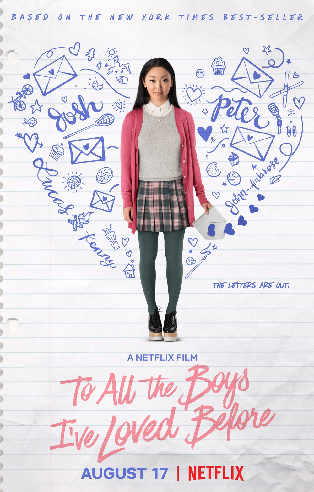

I've Loved Before (para todos os garotos que já amei) é um romance de 2019 para jovens adultos da autora americana Jenny Han, publicado pela primeira vez pela Simon e Schuster e lançado em 15 de abril de 2014. Susan Johnson produziu o filme, que foi inspirado no livro.
Lara Jean Song Covey escreve cartas de amor secretas para todos os seus antigos paqueras. Um dia, as cartas são misteriosamente enviada para os destinatários, virando sua vida de cabeça para baixo.
A saga é acompanhada de mais dois filmes:
Capa do Filme
